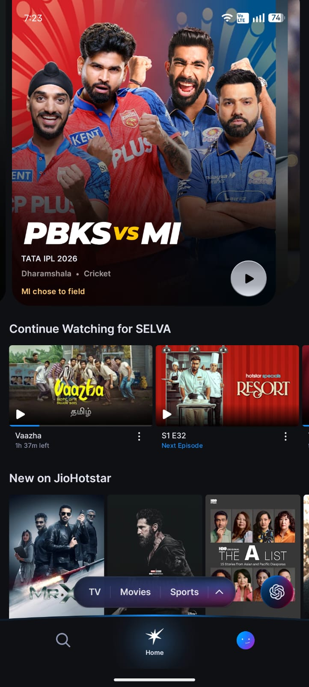
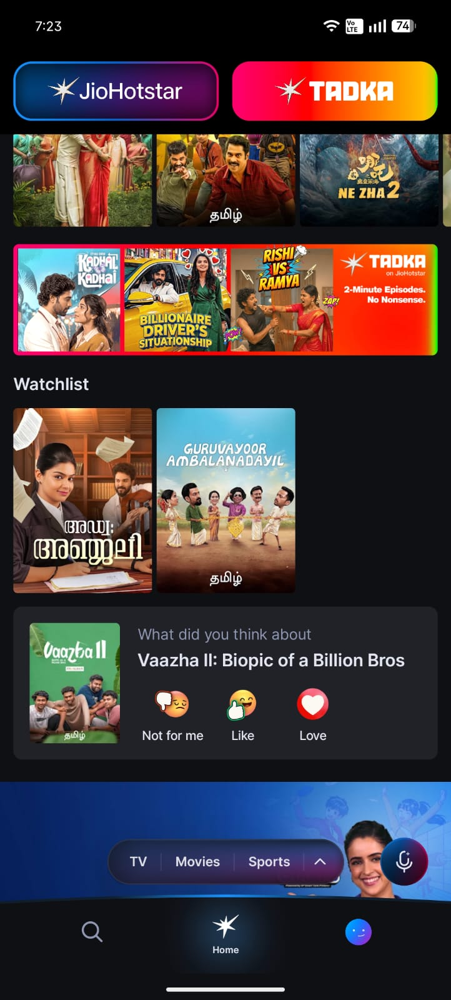
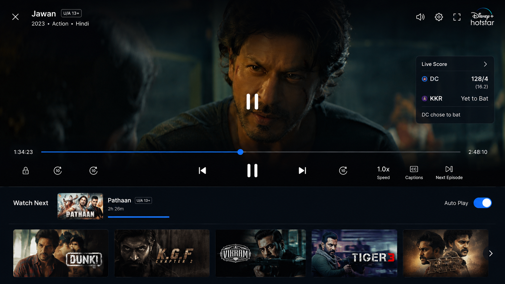
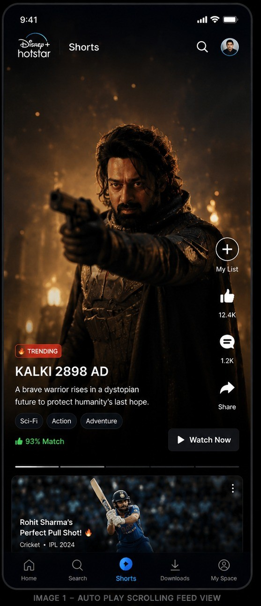
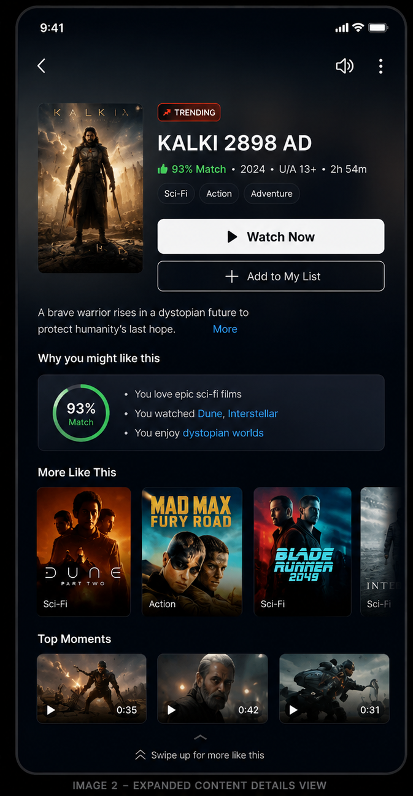

Disney+ Hotstar Screen Analysis
This case study reviews three mobile app experiences from Disney+ Hotstar: the homepage, the video watching screen, and a proposed short-form content discovery screen. Each screen is analysed through what works well, what can be improved, and which metrics those improvements can influence.
Screen 1 — Homepage
The homepage is the main discovery surface. It should help users resume content quickly, explore categories, and discover new titles with minimal friction.


3 Things I Like
- Easy switching between content categories TV, Movies, Sports, and other category tabs reduce navigation effort and make content discovery more structured.
- AI feature button is clearly visible The AI button is easy to notice, which improves discoverability and encourages users to try AI-powered discovery.
- “Continue Watching” is placed near the top This helps users resume content quickly without searching again, making the session start faster.
Suggested Improvements
Move movie/show feedback prompts higher
Feedback prompts currently appear too low on the homepage. Placing them higher can increase visibility and collect more user preference signals.
Add a dedicated “Recommended for You” row
A personalized row based on watch history, genre preference, and behaviour can reduce decision fatigue and improve content discovery.
Screen 2 — Video Watching Screen
The video player experience directly affects user comfort, watch time, binge-watching behaviour, and whether users stay inside the platform while watching.

3 Things I Like
- Live match scores are visible while watching Users can track sports updates inside the video player instead of switching to another app.
- “Watch Next” and auto-play improve continuity The next episode or title starts smoothly, reducing friction between content and encouraging longer sessions.
- Playback controls are easy and intuitive Forward, rewind, brightness, volume, captions, and speed controls are accessible and reduce playback frustration.
Suggested Improvement
Add community discussions and live reactions for reality shows
Reality shows naturally create audience conversations. Adding live polls, fan reactions, contestant voting, and discussion threads can keep this engagement inside Hotstar instead of pushing users to external platforms.
Screen 3 — Short-Form Content Discovery Concept
This is a proposed feature: a vertical, auto-playing feed for trailers, movie scenes, cricket highlights, trending moments, and personalized previews.


Concept Highlights
- Auto-playing vertical discovery feed Users can quickly explore clips, trailers, cricket highlights, and trending scenes without browsing many rows.
- Clear content context Each clip can show title name, genre tags, trending badge, swipe hint, and a direct “Watch Now” button.
- Faster conversion from preview to full content Short clips can help undecided users discover something interesting and immediately start the full movie, show, or sports content.
Why This Feature Matters
Reduce decision fatigue and improve discovery
Users often leave streaming apps when they cannot decide what to watch. A short-form feed keeps users engaged, exposes them to more titles, and can increase long-form content starts.